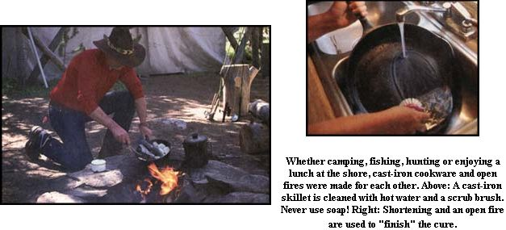

The hallmark of any country kitchen is an old black cast iron skillet sitting atop the woodstove. And there's good reason for that: Whether you're baking biscuits in a cast iron Dutch oven, flipping pancakes on a cast iron griddle over a woodstove or pan-frying chops on a modern electric range, cast iron makes the best cookware.
Cast iron cookware has been used steadily in America since the 1600s, though over the last half century or so it has been known primarily as an outdoor cookware, used mainly by campers, hunters and living historians. But with more and more people discovering its virtues, there has been a resurgence in the use of cast-iron cookware in the home.
When folks think of cast ironware, most tend to think of skillets and fry pans, but the fact is there is an iron pot or kettle designed for just about any cooking chore. You can bake in Dutch ovens, make stew in a kettle or even do up a stir-fry in a cast-iron wok. Then there are griddles for making flapjacks, specialized pieces for making corn sticks and muffins, baking pans and large pieces designed specifically for putting up preserves. Cast iron also provides more even heat distribution than today's lightweight aluminum pans. It cooks evenly, cleans up easily and holds heat longer (thus requiring less fuel). Moreover, cast iron also has medicinal qualities. In fact, many medical authorities believe that there are health benefits to cooking in iron since food may absorb and pass onto us traces of the essential mineral.
But in order to live up to its potential, cast-iron cookware must be properly seasoned (cured) and that cure must be maintained. If done correctly, the iron will not rust, nor will food stick to it and burn.
Curing cast iron means filling the pores and voids in the metal with grease of some sort, which subsequently gets cooked in. This provides a smooth, nonstick surface on both the inside and outside of the piece. While the curing process is similar whether you start with new or used cast iron, there are a few important differences. Let's look at new cookware first.
There are only a handful of sources for new cast iron cookware. Two American companies - Wagner and Lodge - still produce it and the rest comes from Asia. Generally you're better off with the finer grained American-made goods. The imports, though cheaper, have a course grain that is hard to cure and that requires more attention once it's cured.
Also, if you have a choice, avoid designs with self-basting lids. These are either covered with metal nipples or have a series of holes on the inside. They are more difficult to care for, because steam condenses in the depressions and on the nipples and tends to draw out the cure. They're also much harder to dry, resulting in rust on the inside of the lid and a metallic taste in the food that comes from cooking in uncured iron.
Wooden handles - more common on imported ironware - are handsome and stay cool to the touch, theoretically. But keep in mind that they are not appropriate for use on an open fire, and the wooden handles actually do heat up, thanks largely to the aluminum bolts that generally pass through their middles. Also, because you have a soft metal screw going into a hard metal thread, the bolt eventually wears down, causing the handle to loosen.
All new cast iron has a protective coating on it, which must be removed. American companies use a special food-safe wax; imports are covered with a water-soluble shellac. In either case, scrub the item with a scouring pad, using soap and the hottest tap water you can stand. Once the coating is removed, you should never again let soap touch the iron.
Let's repeat that. Do not use soap on seasoned cast iron. The cure (seasoning) is based on grease, and soap's job is to remove grease. So if you wash your iron with soap, you'll destroy the very effect you are trying for.
Also, make sure to remove all of the initial protective coating. If not, you'll get a very strange smell as the coating cooks during the curing process and this funky aroma will often linger, permeating and corrupting the flavor of any food later cooked in the pot.
When the iron comes clean, immediately dry it and wipe a fairly heavy coating of shortening over all the metal, being sure to include the handle and any legs or other protuberances. Historically, lard was used for this purpose. But lard, like all animal fats, has a tendency to turn rancid, so shortening is a better bet. Never use butter, margarine or any fat containing milk or salt to season cast iron.
Heat your oven to 400 degrees Fahrenheit, and bake your cast iron pieces for about an hour. Remove them, blot up any puddles of oil with a paper towel, then let the iron pieces cool. Do not be alarmed if at this point the cast iron feels sticky; it'll lose this once the cure is complete.
Cast iron makers will tell you that the cookware is now ready for cooking, though most recommend that you use it only for frying the first few times. We find that oiling and heating the iron at least one more time before use effects a hotter initial cure. In this case, grease the piece lightly, and the stickiness should disappear; if not, it will the first time you cook with it.
After you've completed the second coating, it's okay to cook in the cast iron pan, but be sure to follow the manufacturer's suggestion and use the piece for frying only. Your ironware will be slightly discolored at this stage, but these first few frying jobs will complete the cure, turning the iron into the rich, black color that is the sign of a well-cured, well-used cast iron skillet or pot.
Usually, curing cast iron takes considerable time. However, there is a way to hasten the process. To achieve a final cure quickly, build a high-flamed fire outdoors. While any fuel will serve, it's best to avoid softwoods as they will deposit creosote on the iron, which is not good for you.
Grease the iron on all surfaces fairly heavily and set it in the flames. When a good coating of soot has been deposited on the bottom, turn the piece and brush the sooty surface with more shortening. Be sure to use a natural fiber brush for this because synthetics will melt. When the topside, now facing the flames, has accumulated a sufficient layer of soot, turn the piece again and grease the sooty surface. Two or three turnings should complete the job. Remove the iron from the fire and let it cool.
Now comes the messy part. Liberally grease paper towels and use them to wipe off the iron. Lots of loose soot will come off, so you'll need plenty of towels. Try not to reapply this loose surface soot to the ware. Keep wiping with greased paper towels, periodically shifting to a clean spot, until most of the heavy soot is removed.
Your iron should new have a deep black finish, which normally only comes with months of use. What you've done is fill in all of the pores and voids in the iron, creating a smooth nonstick surface. The black finish will now help to absorb and hold heat evenly.
You can use the iron right away or clean it to remove any additional surface soot. We usually clean ours, so as not to transfer any soot to the kitchen stove. But should you choose to skip this step, the first cooking job will finish the cure, and no additional loose soot will appear unless you use the piece on an open fire.
Proper cleaning of cast iron is the secret to maintaining the cure. So let's repeat once more: Do not use soap on cured cast iron. Ever! All you need is hot water (the hotter the better) and a scrub brush.
Once again, use straight hot water from the tap or water you've heated in camp. If outdoors, pour a small amount (a cup or two is all it takes) in the iron and use the scrub brush to vigorously scour all surfaces. Rinse the surface with more hot water. Indoors, merely let the hot water flow over the iron as you scrub it with the brush. If you are concerned about sterilization, pour boiling water into and over the iron after you have brushed it. But frankly, we don't consider this necessary: If the iron has been cured properly, it will not harbor pathogens.
Immediately dry the iron, then coat it with a thin film of shortening. This replaces any you have lost through cooking and cleaning and further prevents rust.
Iron that's been used on an open fire will always have loose soot on the outside. Rather than dirtying the scrub brush, we use one of those plastic scouring pads instead. We keep a few reserved solely for this purpose, to avoid transferring soot to other cleaning products. And we first wipe the ironware with greasy paper towels to remove most of the loose soot.
Depending on what it's used for, cast iron often doesn't have to be cleaned at all. We have friends who reserve one skillet strictly for making cornbread. When the skillet comes out of the oven, they turn the bread onto a rack to cool. The skillet is merely given a wipe with a paper towel, and a new film of shortening is applied. Very often, you can use the same approach even for foods cooked on the top of the range. The idea is to make sure nothing but a thin film of grease is left behind.
Used cast iron requires a different approach. Depending on where you acquire it, you are likely to find it coated with everything from paint to crusted-on old food to a thick coating of burned lard. Much of this can simply be burned off by leaving the iron in a very hot fire. There's also the old-time solution of soaking the iron in a mild acid bath (using a very diluted mix of water and battery acid or lye). But given the inherent and very serious dangers of this method (both agents are extremely caustic), it's best left to professional paint strippers, who have the goggles, rubber aprons, respirators, high boots, long gloves - and medical insurance - to work with caustics safely and responsibly.
Less hazardous to the lungs, eyes, skin and environment is to wash the iron in hot soapy water to remove any loose crud, then treat the iron with one of the new benign paint strippers, followed by a putty knife, wire brush, steel wool and some elbow grease. After the iron is clean, merely follow the directions for a new iron. One caveat: Paint can be very messy, so if it's a factor, you may want to work outside.
Some old iron pieces will, after a soapy water wash, look like new. Others will have stains that won't come out no matter how hard you scrub. Don't worry about these; the cure will later hide them. Once the iron is clean, oil and cure it as usual.
You're likely to find a greater selection of styles, sizes and designs in used ware than what is available new. You can find cast iron at flea markets and antique malls, garage sales and farm auctions. But be sure you know what you're buying before plunking your money down. (You might try Ebay, Craigslist and Freecycle, too.)
Cast iron has become hugely popular as a collectible, causing prices to skyrocket. You can easily pay several hundred dollars these days for just about anything that says "Grizwold" on it. Problem is, many pieces of no particular collector value, when found in malls and flea markets, carry inflated prices. A common, everyday corn stick mold, for example, sells new for about $15 just about anywhere. Yet, we've seen them in antique stalls for as much as $35.
Examine used iron very carefully. Much of it is warped or has cracks and pinholes from misuse. This doesn't much matter if an item is destined to be a wall hanger, but you won't want to cook in it. Be especially wary of any piece that has been painted. Unscrupulous dealers often "repair" holes and cracks with epoxy compounds, then use black paint to hide their handiwork. A good welding shop can repair these holes, but it's hardly worth the cost.
When cooking with cast iron, heat the piece slowly. Cast iron works best when there is an even heat source spanning the piece's bottom. Old-fashioned wood- and coal-burning stoves are ideal for this (see Cooking With Wood), but very rarely does a modern gas or electric range provide this type of heat. The solution is to set your burner on very low and allow the cast iron to gradually warm up. You can then turn up the heat to medium or medium-high, as necessary. There is no reason ever to use the highest settings with cast iron, as it collects and conducts heat so readily.
Alternatively, you can evenly heat your ironware by popping it into an oven set on low. Once it's heated, simply transfer it to the range top and cook as usual.
Be particularly careful when cooking with an electric range, because the burners create hot spots that can warp cast iron or even cause it to crack. Be sure to preheat the iron very slowly when using an electric range and keep the settings to medium or even medium-low.
Preheating is not a problem when baking or oven-roasting, since the iron will heat evenly in the oven. However, you may find that you do not have to cook the food quite as long as the recipe calls for, because of iron's heat-retaining property.
Finally, be sure to use the appropriate iron for the task at hand. A three-legged Dutch oven is not the right choice for an indoor stove. Nor should a large baking dish be used on top of the range, unless you can perfectly balance the heat from the two burners it sits across.
Pick the right iron, treat it to the proper cure, dig out your favorite recipes and soon you'll understand why grandma spent so much time in the kitchen.
See also:
* How Do You Remove Rust From Cast Iron?
* Seasoning Your Cast-Iron Pan
* Cast-Iron Ware
* Country Lore: Crusty Frying-pan Pizza Recipe
|
Curing (seasoning) cast iron means filling the pores and voids in the metal with grease of some sort, which subsequently gets cooked in. This provides a smooth, nonstick surface on both the inside and outside of the piece. |
 Whether camping, fishing, hunting or enjoying a lunch at the shore, cast-iron cookware and open fires were made for each other. A cast-iron siillet is cleaned with hot water and a scrub brush. Never use soap! Shortening and an open fire are used to season cast iron. |
Cast iron cookware heats evenly and can last a lifetime. |
|
There's a cast-iron piece for most any cooking job you can dream up. |
|
|